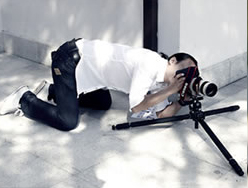
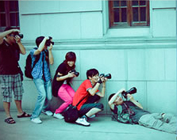

视觉长廊”诞生于2016年，具有年轻的朝气。创始以来，“视觉长廊”的办展宗旨始终坚持以创新、视冲击、年轻活力为理念，展示新时代摄影人最新创作成果，推荐新人、新作、新观念，为摄影人搭建对话交流平台纪实摄影（documentary photography）是以记录生活现实为主要诉求的摄影方式，素材来源于生活和真实，如实反映人们所看到的，因此，纪实摄影有记录和保存历史的价值，具有作为社会见证者独一无二的资格。纪实摄影是解释人与环境，人与社会活动之间相互关系的解说性照片。“视觉长廊”诞生于2016年，具有年轻的朝气。创始以来，“视觉长廊”的办展宗旨始终坚持以创新、视冲击、年轻活力为理念，展示新时代摄影人最新创作成果，推荐新人、新作、新观念，办展宗旨始终坚持以创新、视冲击、年轻活力为摄影目标， 记录生活现实为主要诉求的摄影方式，素材来源于生活和真实，如实反映人们所看到的，因此，纪实摄影有记录和保存历史的价值，具有作为社会见证者独一无二的资格。
- 
- 
优秀用户的原创分享打造的精彩社区
视觉长廊图片分享社区，目前最为活跃的是摄影社区、美食社区、旅游社区、宠物社区、达物社区、汽车社区，以及手机拍客社区和电子杂志社区。在视觉长廊，我们用镜头记录生活，分享美图，线上互动，线下活动，成为朋友。在视觉长廊，我们分享的不仅是图片，更是兴趣是心情、是生活、我们用镜头记录生活，分享美图是感动…
视觉长廊原创电子杂志，国内电子杂志的领跑者
视觉长廊原创电子杂志《SJCLZine》和《印象》，从04年至今，发行量至今全
国第一。两本原创杂志得到了大部分电子杂志忠实粉丝的喜爱和追逐。
《SJCLZine》：生活、时尚，高端、都市白领的时尚蓝本。。。
《印象》：观点、品味，网络版的逸飞视觉。。。
推荐给您 http://read.sjcl.cn
【视觉长廊相机奖项】：
2011年12月14日，在 “2011中国移动全球开发者大会” 上，中日韩三国手机应用颁奖典
礼，视觉长廊相机荣获中国区开发应用大赛第2名！（中国区只有6个APP获奖）
2012年2月18日，视觉长廊相机再获殊荣，被ChinaBang评为2011最受欢迎图片类应用！
2012年6月16日，获得2012艾媒咨询无线评测机构--中国最佳移动应用产品“最佳娱乐应用奖”！
2012年 中国手机大赛（2012·惠州），荣获“中国移动应用创新奖”
【公司奖项】：
2007年艾瑞新经济年会中获得"2007 个人空间类最具发展潜力企业奖"
"中国2006年度创新传媒人物与创新传媒推选"活动中，获得2006年度十大创新传媒
"2006华南WEB2.0年度评选"活动中，视觉长廊获得全场大奖"年度华南最佳WEB2.0网站"
视觉长廊荣获著名创投研究机构清科颁发的"2006中国最具投资价值企业50强"
获得2006年首届中国品牌媒体高峰论坛暨品牌媒体联盟成立大会评出的 "中国新媒体品牌10强"
iResearch艾瑞市场咨询调查结果显示，在网民最常看的数字杂志中,《SJCLZine》在内容量、版面风格、多媒体元素、互动元素、广告满意 度调查中，均位居第一。
2006年，史坦国际授予SJCL.CN“第3届中国最具投资价值媒体”
2006年，首届中国北京国际文化创意产业博览会授予视觉长廊“媒体百强”荣誉称号
2007年艾瑞新经济年会中，获得"2007 个人空间类最具发展潜力企业奖"
2007年，荣获互联网实验室“中国最具投资价值Top100网站”
第二届中国传媒创新年会视觉长廊荣获 “专家委员会特别推荐 —— 最具典型性十大创新媒体”
2008年广州青年摄影家协会授予“最佳合作奖”
2012年，第十一期“豌豆荚设计奖” 获得者
在“2012安卓全球开发者大会”千人盛会上，PSJCL.CN荣获 “最具创新应用开发企业 Top 10”奖项